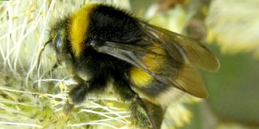
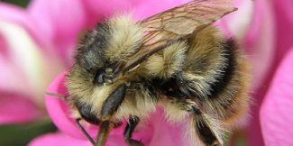
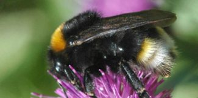

Home
Overview
Anatomy
British Bumblebees
BRITISH BUMBLEBEES
 Common Bumblebees
 Rare Bumblebees
 Cuckoo Bumblebees
Buff-tailed Bumblebee
White-tailed Bumblebee
Garden Bumblebee
Red-tailed Bumblebee
Early Bumblebee
Common Carder Bee
Tree Bumblebee
Heath Bumblebee
Bilberry Bumblebee
Broken-belted Bumblebee
Brown-banded Carder Bee
Moss Carder Bee
Shrill Carder Bee
Red-shanked Carder Bee
Ruderal Bumblebee
Great Yellow Bumblebee
Northern White-tailed Bumblebee
Cryptic Bumblebee
Short-haired Bumblebee
Red-tailed Cuckoo Bee
Southern Cuckoo Bee
Field Cuckoo Bee
Gypsy Cuckoo Bee
Barbut's Cuckoo Bee